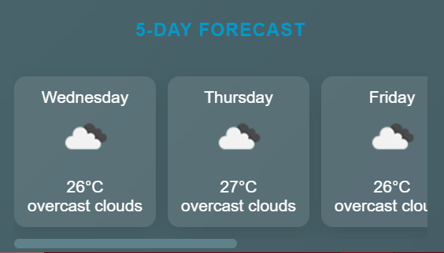

Key Features

5-Day Forecast
Get a reliable 5-day forecast to help plan your farming activities ahead of time.

Weather Alerts
Receive timely alerts about extreme weather conditions that could affect your crops.

Historical Data
Compare current weather conditions with past data to make better farming decisions.